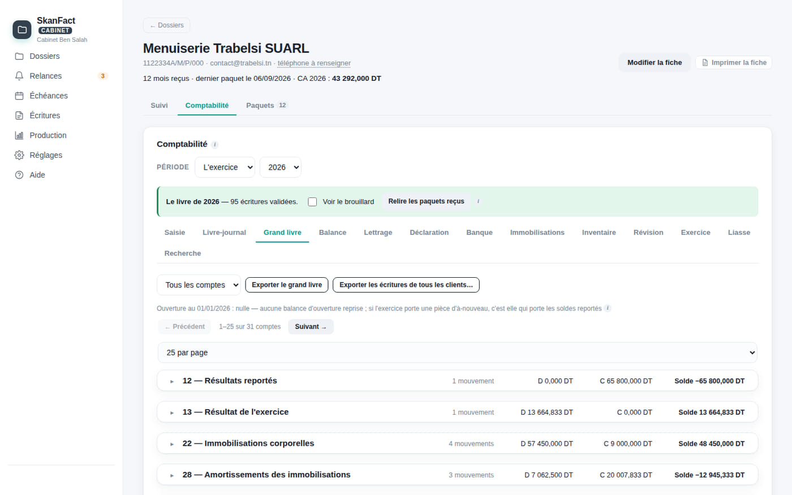
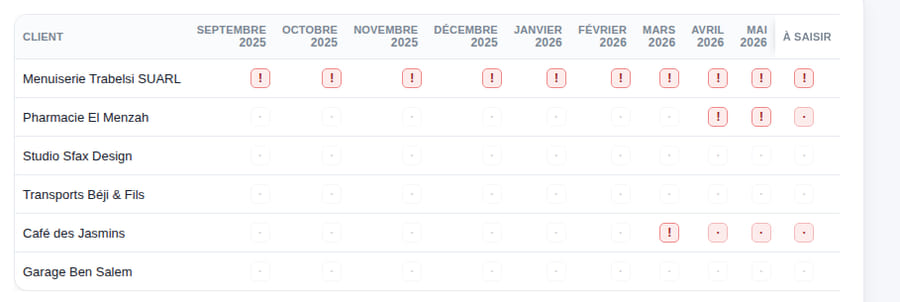
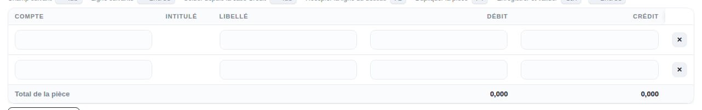
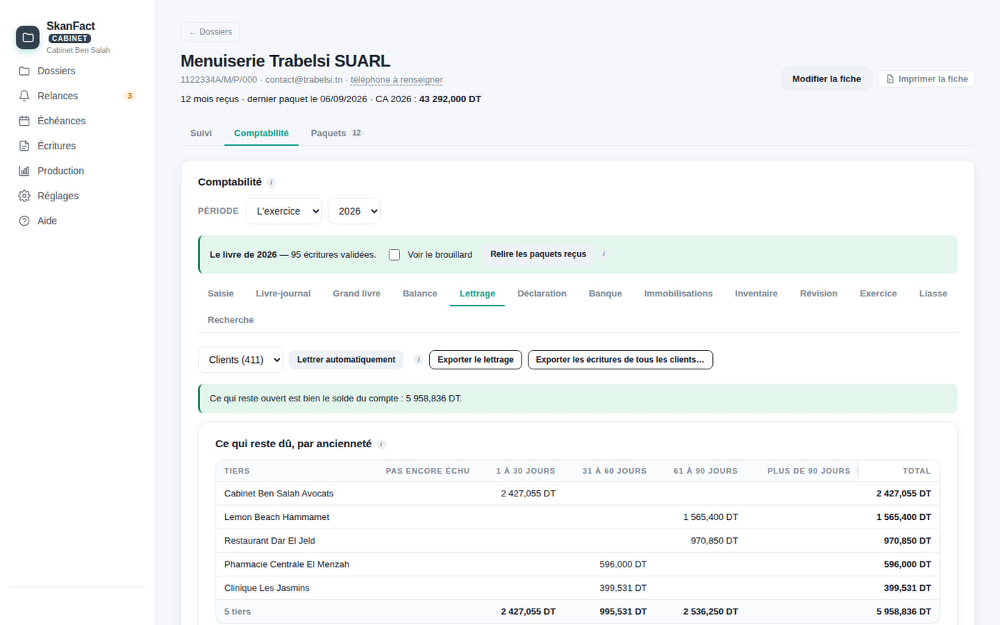
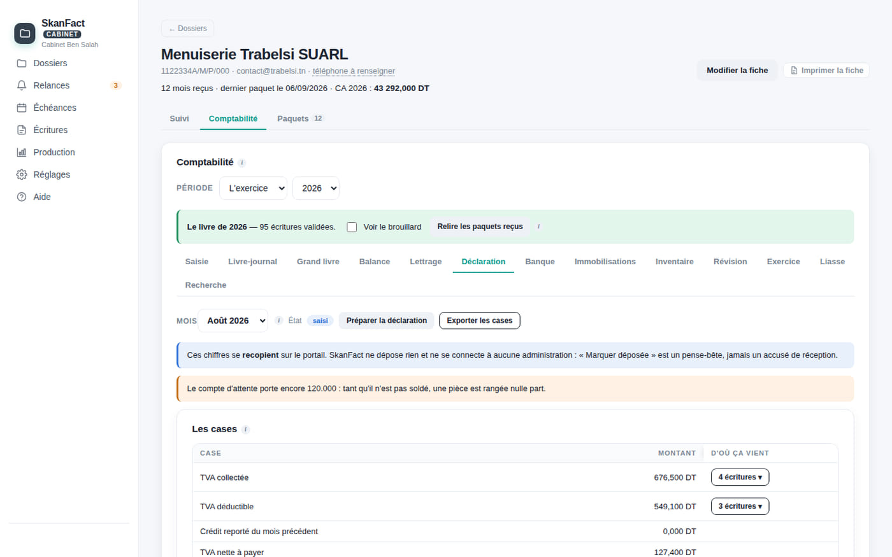
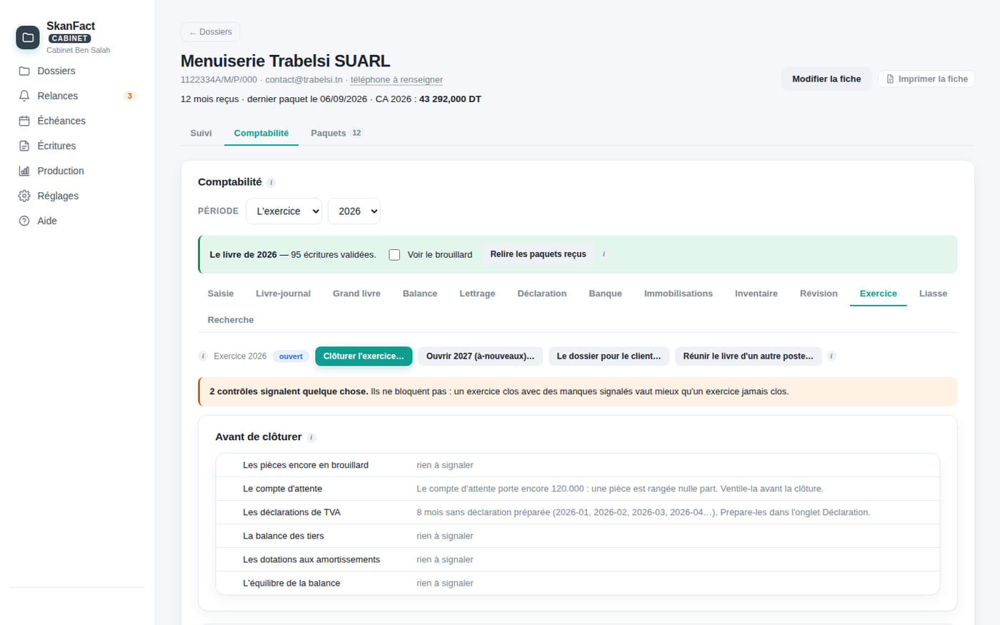

Accueil SkanFact Cabinet
Pour les cabinets d'expertise comptableLe logiciel de tenue
de votre cabinet.
Plan SCE, saisie au clavier, banque et lettrage, TVA et déclarations, inventaire, clôture d'exercice, états financiers, liasse et révision. Pour tous vos dossiers — que le client soit sur SkanFact ou non.
Gratuit pour vos clients sur SkanFact, et pour trois dossiers de plus · postes et collaborateurs illimités

Ce qu'il faut savoir en premier
Un cabinet a soixante clients, dont deux sur SkanFact.
Un logiciel qui ne saurait traiter que ces deux-là ne vous servirait à rien. SkanFact Cabinet tient un dossier de bout en bout dans les deux cas — ce qui change, c'est seulement d'où viennent les écritures.
Un dossier ordinaire
Vous reprenez la balance d'ouverture, vous saisissez, vous importez le relevé bancaire. Exactement comme dans le logiciel que vous utilisez aujourd'hui.
- Reprise par balance d'ouverture, sans ressaisir l'historique
- Saisie au clavier, avec guides d'écritures et abonnements
- Import du relevé, rapprochement et lettrage
Le dossier arrive écrit
Son paquet mensuel contient les pièces et les écritures déduites. Elles entrent dans votre livre avec leur source et leur justificatif attaché.
- Aucune ressaisie : la balance est la sienne, au millime
- Chaque écriture porte la pièce qui l'a produite
- Ce dossier ne vous coûte rien, pour toujours
Le mois
De la pièce reçue à la déclaration déposée.
Le tableau de production donne l'état de chaque client sur chaque mois : reçu, à saisir, saisi, révisé, déclaré. C'est la vue qu'aucun tableur ne vous donnera le 18 du mois.

Qui a envoyé, qui n'a rien envoyé, ce qui reste à saisir et ce qui est déjà déclaré. Les relances partent d'ici.

Brouillard puis validation. Guides d'écritures, abonnements, contre-passation. Une écriture validée ne se modifie plus : elle se contre-passe.

Import du relevé, rapprochement, lettrage automatique puis manuel, balance âgée. Les lignes non rapprochées se comptent toutes seules.

Lue dans le livre, pas ressaisie. Le calendrier suit le régime que vous déclarez pour chaque dossier : SkanFact n'écrit aucune règle de droit.
L'exercice
Inventaire, clôture, états, liasse.
La fin d'exercice est le moment où un logiciel de comptabilité se juge. Celui-ci va jusqu'au bilan, à l'état de résultat et au résultat fiscal — et vous dit ce qu'il ne sait pas.

La révision
La question part chez le client, en face de sa pièce.
C'est le seul endroit où SkanFact fait quelque chose qu'aucun autre logiciel ne fait. Vos feuilles maîtresses se remplissent par cycle ; quand un compte vous arrête, la question part chez le client — et si celui-ci est sur SkanFact, elle s'affiche sur la pièce concernée, pas dans un mail qu'il faudra retrouver.
Vous signez ce qui est revu
Trésorerie, ventes, achats, immobilisations, personnel, fiscal, capitaux : chaque cycle a sa feuille et son questionnaire.
Vous posez la question
Sur la ligne qui la provoque. Pièce absente, 471 non soldé, facture ouverte depuis huit mois : elle part avec son contexte.
Le client répond, et renvoie
Il joint ce qui manquait et renvoie le mois révisé. Vous ne relancez pas par téléphone pour la troisième fois.
Les comptes non signés ne bloquent rien : l'application les compte et le dit. C'est la même règle que partout ailleurs dans SkanFact — on préfère un travail fini qui nomme ses trous à un écran vert qui n'en montre aucun.

Le cabinet, pas seulement le comptable
Vos collaborateurs, et vos postes, sans compter.
On ne vous vend pas des sièges. Un cabinet qui grandit ne doit pas payer pour avoir grandi.
Collaborateurs et droits
Saisie, validation, supervision — par dossier. Chaque écriture validée, chaque clôture, chaque import porte qui l'a faite et quand.
Plusieurs postes
Un dossier partagé s'ouvre depuis deux postes sans que l'un écrase l'autre en silence. Une écriture validée ne se fusionne jamais : elle existe, ou pas.
Vos sauvegardes, et votre clé
Sauvegarde quotidienne, sauvegardes nommées, copie externe, clé de secours exportable. Changer d'ordinateur a un chemin, et il est testé.
Les limites, dites avant l'achat
Trois choses que SkanFact Cabinet ne fera jamais.
Elles ne sont pas des manques à combler un jour : ce sont des décisions.
Écrire chez un client
L'application ne modifie jamais les données d'une entreprise. Elle lit son paquet, elle lui pose des questions. Elle ne corrige pas sa facture à sa place.
Déposer à votre place
SkanFact ne se connecte à aucune administration. « Marquer déposée » est un pense-bête, pas un accusé de réception — et l'écran le dit.
Inventer une règle de droit
Aucun numéro de compte, aucune rubrique de liasse, aucun taux d'impôt n'est une vérité ici. Tout se règle, et chaque écran porte son « À VÉRIFIER ».
Combien
Vous ne payez que les dossiers qui ne sont pas sur SkanFact.
Chaque client que vous faites passer sur SkanFact cesse de vous coûter quoi que ce soit. Aucun argent ne circule vers le cabinet : vous payez simplement moins un outil que vous auriez payé de toute façon.
Vos clients sur SkanFact
Gratuit, sans limite. Tant que le dossier a une licence SkanFact valide ou un essai en cours, il ne compte pas.
Trois autres dossiers
Gratuits, pour toujours. Un cabinet doit pouvoir essayer sur de vrais dossiers sans rien signer.
Au-delà
72 DT HT par dossier et par an, dégressif par paliers. Postes et collaborateurs illimités.
Essayez-le sur un vrai dossier.
Trois dossiers hors SkanFact sont gratuits pour toujours : vous pouvez reprendre un client, saisir un mois et sortir sa déclaration sans rien signer.
Mac et Windows · aucun compte à créer · les dossiers de vos clients restent sur votre poste